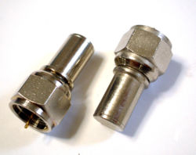
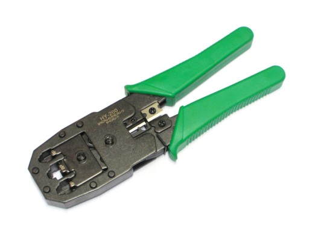

W systemach telewizji przemysłowej wykorzytsuje się kilka typowych złączy, które pozwalają na podłączenie i współpracę różnych urządzeń. Rodzaje wykorzystywanych złącz zależną przede wszystkim od struktury systemów, rodzaju urządzeń oraz od transmitowanych sygnałów audio/video.
Złącze D-Sub
D-sub (ang. D-subminiature) to rodzina gniazd i wtyków stosowanych w urządzeniach i zakończeniach przewodów dla potrzeb połączeń w transmisji sygnałów pomiędzy urządzeniami elektronicznymi. Złącza D-sub występują w kilku rodzajach, najczęściej jednak posiadają 9, 15, 25, 37, 50 lub 60 pinów. Standard D-sub wykorzystywany jest głównie w budowie fizycznej i raczej nie znajduje zastosowania w komunikacji. W przypadku systemów telewizji przemysłowej złącze D-sub czasami jest stosowane do transmisji sygnału wizyjnego RGB. Występuje w monitorach CCTV, multiplekserach i quadach jako złącze alarmowe.
dźwigni.
Złącze F
Złącze typu F jest to współosiowe złącze zakręcane lub zaciskane (stożkowo, kompresyjnie), które służy do łączenia sieci zbudowanych na okablowaniu koncentrycznym o impedancji 75 Ohm. Złącze występuje też w tzw. odmianie szybkiej, gdzie wtyk męski nie posiada gwintu co przyspiesza proces przełączania kabla. Najczęściej stosowane w instalacjach telewizji kablowej, modemach kablowych oraz telewizji satelitarnej. Czasami znajduje również zastosowanie w instalacjach monitoringu wizyjnego.

Terminator końcowy ze złączem typu F
Złącze BNC
W typowych analogowych systemach telewizji przemysłowej podstawowym interfejsem jest złącze typu BNC (ang. Bayonet Neill-Concelman). Złącze BNC stosowane jest do łączenia urządzeń w sieciach zbudowanych na okablowaniu koncentrycznym. Powszechnie stosowane w instalacjach telewizji przemysłowej. Kupując złącze BNC na potrzeby systemu telewizji przemysłowej, należy zwrócić uwagę na kilka parametrów. Przede wszystkim musi być odpowiednio dobrane do pracy o impedancji 75 Ohm (w sprzedaży również złącza BNC do pracy w impedancji 50 Ohm) i posiadać właściwą średnicę średnicy tulejki współpracującej z żyłą ekranową posiadanego przewodu (dostępne są przewody o różnych grubościach żyły ekranowanej). Złącza BNC występują w trzech wersjach: zaciskana, lutowana oraz nakręcana. Obecnie najczęściej wykorzytsuje się złącza zaciskane, gdyż ich montaż jest zarówno szybki, jak i niweluje możliwość oderwania złącza od przewodu.
Złącze RCA (Cinch)
Złącze RCA (od nazwy firmy Radio Corporation of America) najczęściej jest stosowane w przypadku krótkich połączeń pomiędzy urządzeniami. Połączenie to korzysta z sygnałów niesymetrycznych i przy większych długościach podatne jest na zakłócenia elektromagnetyczne. Można je w pewnym stopniu zniwelować stosując wysokiej klasy miedziane przewody i pozłacane wtyki, jednak jest to dosyć kosztowne rozwiązanie. Ze względu na niski poziom wykonania większości tanich wtyków RCA nie zaleca się stosowania tego typu złącza do transmisji sygnałów video. Najczęściej znajduje zastosowanie w przesyle sygnałów audio.
Złącze RJ-45
RJ-45 (ang. Registered Jack ? Type 45) jest rodzaj ośmiostykowego złącza używanego najczęściej do zakończenia przewodów typu "skrętka" (UTP, STP, itp.). Najbardziej rozpowszechnione jako podstawowe złącze do budowy przewodowych sieci komputerowych w standardzie Ethernet. Interfejs RJ-45 jest podstawowym złączem jakie możemy spotkać w sieciowych systemach monitoringu wizyjnego.
Złącze RJ-45 występuje w trzech różnych wersjach: normalnej (ang. straight-through), skrosowanej (crossover) oraz odwróconej (rollover). Wersja normalna służy do wykonywania standardowych połączeń, wersja kłosowana stosowana jest do łączenia komputerów bez pośrednictwa koncentratora, bądź do łączenia koncentratorów, natomiast wersja odwrócona do podłączania urządzeń sieciowych, takich jak przełączniki oraz routery niektórych producentów
Do zainstalowania złącza na końcu przewodu stosuje się urządzenia mechaniczne nazywane popularnie zaciskarką.

Zaciskarka złączy RJ-45
W systemach monitoringu wizyjnego, które korzystają z techniki światłowodowej przeważnie stosuje się złącza typu SC (o przekroju prostokątnym) i ST (z kołnierzem bagnetowym). W nowo powstających systemach ze względu na obowiązujące standardu zaleca się stosowanie złącza SC.